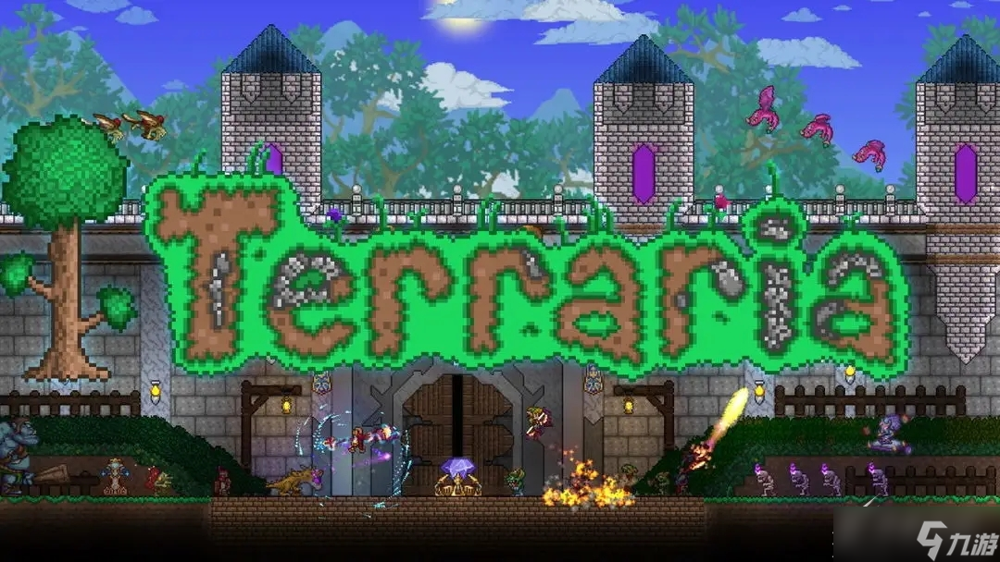

收集了新手在游戏中最常遇到的疑问，涵盖安装、操作、生存、合成等多个方面，快速解决你的困惑，让冒险更顺畅！
常见解决方法：
步骤如下：
优化方法：
新手必看生存技巧：
寻找方法：
入住条件与解决方法：
恢复方法：
常见原因：
解决方法与注意事项：
可能原因：
如果以上问题没有解决你的困惑，可以通过以下方式获取帮助：
1. 泰拉瑞亚官方论坛：https://forums.terraria.org/（英文）
2. 泰拉瑞亚中文维基：https://terraria.fandom.com/zh/wiki/泰拉瑞亚维基（最全面的中文资料）
3. 游戏内配方书：按ESC→点击「配方书」，可查看所有物品的合成路径和条件
4. 视频教程：B站搜索「泰拉瑞亚新手教程」，有大量详细的实操视频